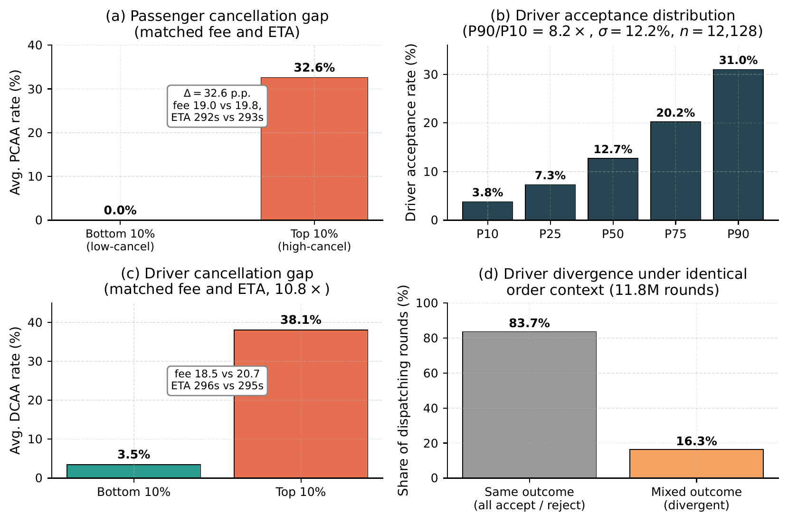
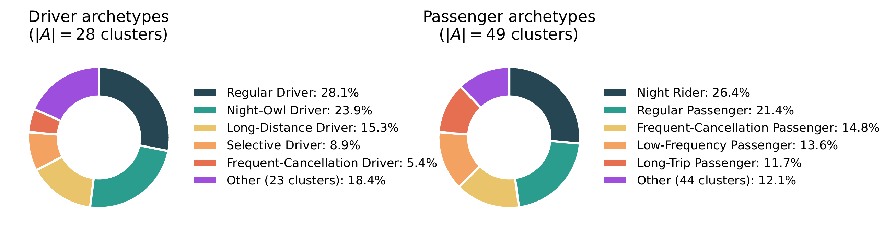
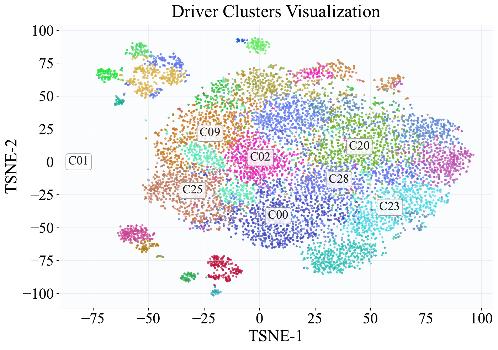
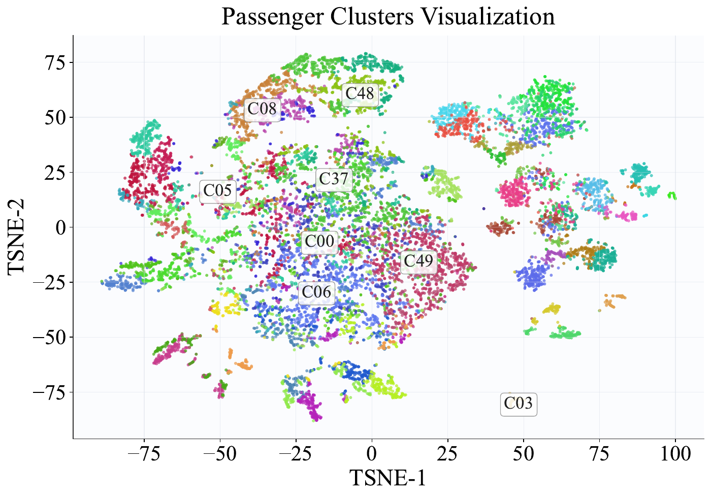
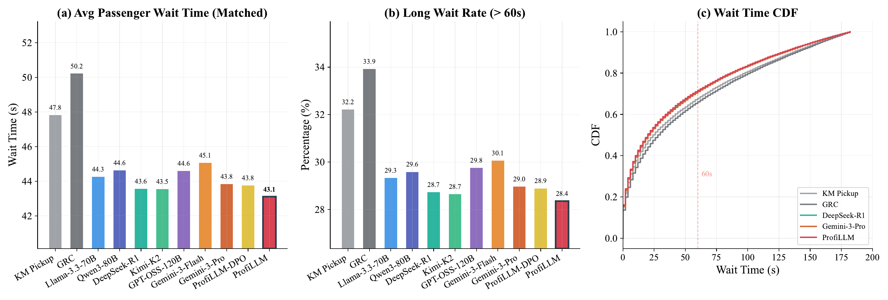
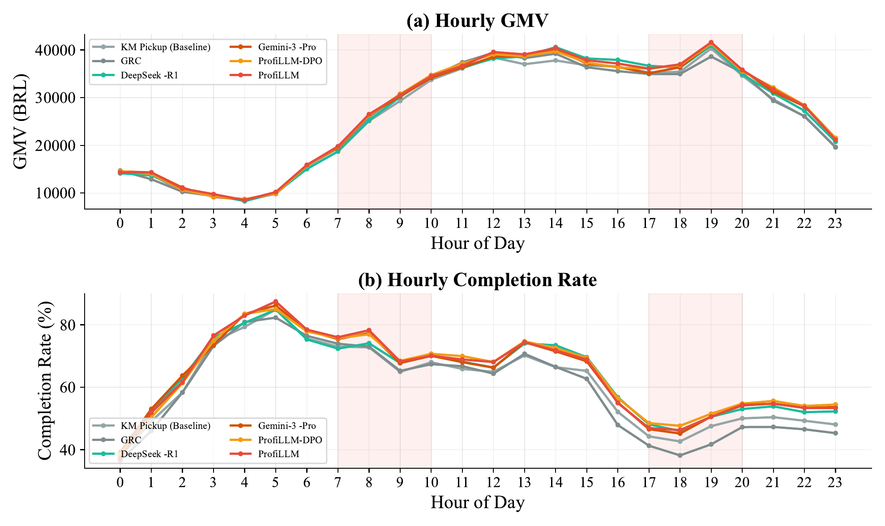
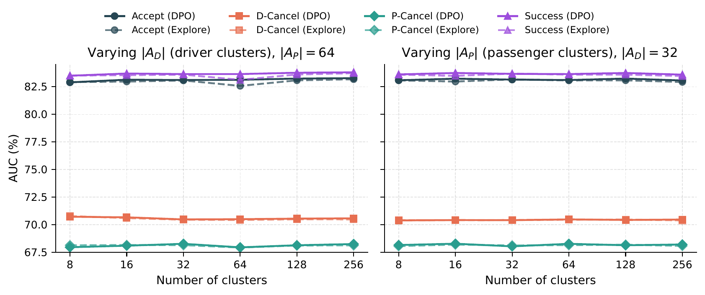
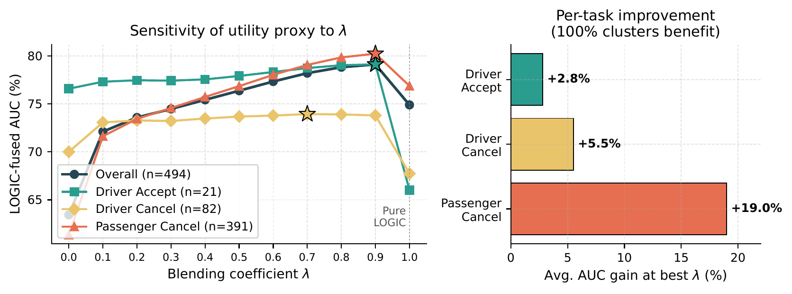
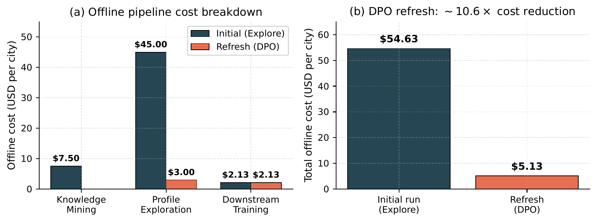

AEmpirical Motivation: User Behavioral Heterogeneity#
This appendix supplements Section 1 of the paper by quantifying how much of order-outcome variance is governed by stable user-level traits that are invisible to structured per-order features, motivating profiling as a complementary information source. All analyses use 38 days of City A production logs (44.3M dispatching records, 333,166 passengers, 12,128 active drivers).
Structured features leave large unexplained behavioral variance. We partition grabbed orders into 100 buckets defined by (fee quintile × ETA quintile × time-of-day), so orders within a bucket share nearly identical structured features. Within these matched buckets the PCR still varies substantially across users: the average within-bucket standard deviation is 24.9%, and the P90–P10 spread reaches 37.1 percentage points. A variance-component (ICC) analysis on the 31,160 passengers with \( \ge 20 \) orders attributes 15.8% of PCR variance to passenger identity alone: a stable, systematic signal that per-order features cannot expose.
Driver and passenger decile gaps under matched contexts. Figure 7 reports complementary cuts of the data. Panel (a) compares the most- vs. least-cancellation-prone passengers among those with \( \ge 5 \) grabbed orders: despite virtually identical average order fee (19.8 vs. 19.0) and ETA (293s vs. 292s), the former's PCR reaches 32.6% while the latter's is 0.0%, a 32.6 p.p. gap. Panel (b) plots DAR percentiles across the 12,128 active drivers; the P90/P10 ratio is \( \mathbf{8.2\times} \) with \( \sigma = 12.2\% \), far beyond what order-level features can account for. Panel (c) shows that driver cancellation behavior is similarly bimodal: top-decile DCR (38.1%) is \( \mathbf{10.8\times} \) the bottom decile (3.5%) under matched order conditions. Panel (d) quantifies the same effect at dispatching-round granularity: in 16.3% of 11.8M dispatching rounds (1.93M rounds) the same broadcasted order receives mixed outcomes from different drivers (some accept, others reject), and in an extreme case nearly all drivers who received a single broadcast order declined it. These patterns are stable individual traits that profiling is designed to capture.

Heterogeneity is largely orthogonal to order-level features. Beyond decile-level summaries, we observe systematic individual preferences such as ETA-sensitivity heterogeneity (9.0% of 42,865 multi-ETA passengers exhibit \( \gt 30 \) p.p. PCR swings across ETA bins; one passenger with 50 orders has 0% PCR at ETA 4–6 min but 100% at ETA \( \gt 8 \) min) and driver price-tier selectivity (11.3% of 10,687 multi-tier drivers show \( \ge 20 \) p.p. DAR gap between high- and low-price tiers, with a smaller 7.1% group exhibiting the opposite preference). The pilot study in Section 1 of the paper confirms that LLM-generated profiles convert these heterogeneity signals into 3.71% and 9.64% relative AUC gains on driver and passenger cancellation respectively, on top of a mature structured-feature predictor. Together, these analyses establish that user-side variance is large, systematic, and complementary to per-order features, precisely the gap ProfiLLM is designed to close.
Long-tail prevalence amplifies the need for clustering. Of the 333,166 unique passengers in the analysis window, 44.9% appear in \( \le 3 \) orders and 59.3% in \( \le 5 \) orders (consistent with Figure 2 of the paper). For these users no individual-level behavioral signal can be reliably estimated, motivating ProfiLLM's adaptive cluster-level profiling that transfers knowledge from data-rich groups to data-sparse individuals.
BRepresentative Case Studies#
To illustrate the kind of behavioral heterogeneity that ProfiLLM's profile embeddings are designed to capture, we walk through two representative cases drawn from City A production logs.
Driver case: divergent acceptance under nearly identical order context. In a representative dispatching round, a single order with a mid-tier fare and a pickup ETA of roughly six minutes during the evening peak, with origin and destination both in the city center, was broadcast to about twenty drivers; only one accepted while the rest declined. The accepting driver had a lower baseline acceptance rate than several of the drivers who declined, so a predictor relying purely on order-side and aggregate driver-side structured statistics would have ranked a declining driver higher. Across the full log, 16.3% of dispatching rounds (1.93 M of 11.8 M batches) exhibit such mixed-outcome broadcasts where the same order receives divergent accept/reject decisions from different drivers under near-identical order-side context (Appendix A). ProfiLLM's cluster-level driver profile encodes precisely this kind of identity-driven pattern, e.g., the accepting driver's cluster is characterized by a willingness to take evening city-center orders with mid-tier fares, while the rejecting drivers' clusters are not.
Passenger case: ETA-sensitivity stratification under matched fare. The most cancellation-prone passengers in City A (18,394 passengers, average PCR 32.6%) book at average fare $19.8 and ETA 293 s; a comparison group of 97,579 passengers exhibits PCR 0.0% under almost identical conditions (fare $19.0, ETA 292 s). As an illustrative pattern, some passengers tolerate short waits yet cancel almost all orders once the pickup ETA exceeds a personal threshold, for instance with cancellation rising from near 0% below roughly six minutes to near 100% beyond eight minutes, while the platform average rises only from 6.9% to 11.3% across the same ETA band. This per-passenger ETA-tolerance threshold is invisible to structured features that report only the absolute ETA value; ProfiLLM's cluster-level passenger profile materializes such latent tolerance patterns as part of the cluster's PROFILE narrative (e.g., “commute-hour passengers who tolerate \( \le 6 \) min wait but defect at longer ETAs”), feeding the prediction model a discriminative signal the structured-feature baseline cannot express.
CBackground#
Tool-Augmented LLM Agents. Recent advances have demonstrated that LLMs can effectively leverage external tools to accomplish complex tasks beyond their inherent capabilities [Yao et al., 2022; Qin et al., 2024; Huang et al., 2025; Wang et al., 2024; Ning et al., 2025]. A tool-augmented LLM agent operates by iteratively generating reasoning traces and invoking tools based on intermediate observations. Formally, given an input query \(q\) and a tool set \(\mathcal{T} = \{t_1, \ldots, t_{|\mathcal{T}|}\}\), the agent produces a trajectory \(\tau = \{(a_i, r_i)\}_{i=1}^{L}\), where \(a_i\) denotes an action (either reasoning or tool invocation) and \(r_i\) denotes the corresponding observation or tool result. This paradigm enables LLMs to analyze data at scales far exceeding their context window limitations.
Direct Preference Optimization (DPO). DPO [Rafailov et al., 2023] provides an efficient approach to align LLM outputs with human preferences without explicit reward modeling. Given preference pairs \((x, y_w, y_l)\) where \(y_w\) is preferred over \(y_l\) for input \(x\), DPO directly optimizes the policy \(\pi_\theta\) via:
\[ \mathcal{L}_{\text{DPO}} = -\mathbb{E}_{(x, y_w, y_l)} \left[ \log \sigma \left( \beta \log \frac{\pi_\theta(y_w|x)}{\pi_{\text{ref}}(y_w|x)} - \beta \log \frac{\pi_\theta(y_l|x)}{\pi_{\text{ref}}(y_l|x)} \right) \right] \tag{7} \]
where \(\pi_{\text{ref}}\) is a reference policy (typically the supervised fine-tuned model), \(\beta\) controls the deviation from the reference, and \(\sigma(\cdot)\) is the sigmoid function. In our context, we extend DPO to align profile generation with downstream prediction utility.
DAnalytical Tool Details#
Table 4 presents the complete categorization of the 27 analytical tools used in the Tool-Augmented Global Knowledge Mining module. These tools are organized into six categories based on their analytical functionality: (1) Statistical tools for computing aggregate statistics, comparing segments, clustering users, and identifying important features; (2) Causal tools for discovering causal relationships, performing counterfactual analysis, and conducting multi-stage iterative mining with uncertainty quantification; (3) Knowledge tools for extracting global causal rules, generating classification benchmarks, and constructing profile knowledge bases; (4) Validation tools for verifying discovered patterns and cross-validating conclusions; (5) Spatiotemporal tools for detecting peak periods, analyzing day-of-week and hourly patterns, identifying spatial hotspots, and examining origin-destination flows; and (6) Contextual tools for analyzing supply-demand balance, wait time factors, matching efficiency, anomalies, special periods, and weather impacts. All tools are designed to accept structured parameters and return interpretable results that the LLM agent can reason over, enabling composable tool chains for complex analytical queries.
Table 4: Categorization of analytical tools in ProfiLLM.
| Tool | Description |
|---|---|
| Statistical (4) | |
AggregateStats | Calculate aggregate statistics by dimension |
CompareSegments | Compare segments on specific metrics |
UserClustering | K-Means clustering on user behavior |
FeatureImportance | Analyze key features for target metric |
| Causal (5) | |
CausalDiscovery | Discover causal relationships |
CounterfactualAnalysis | Perform “what if” analysis |
ChainOfMining | Multi-stage iterative analysis |
UncertaintyAwareMining | Provide confidence intervals |
ContrastiveAnalysis | Compare similar groups for differences |
| Knowledge (3) | |
GlobalCausalRules | Discover global causal rules |
GlobalBenchmarks | Generate benchmarks for classification |
ProfileKnowledgeBase | Generate profile usage guide |
| Validation (2) | |
ValidationDiscovery | Validate discovered patterns |
ConclusionValidation | Cross-validate conclusions |
| Spatio-temporal (6) | |
DetectPeakPeriods | Detect peak periods for metrics |
DayOfWeekPattern | Analyze weekday vs weekend patterns |
HourlyPattern | Analyze 24-hour detailed patterns |
SpatialHotspot | Identify spatial distribution hotspots |
ODFlowAnalysis | Analyze origin-destination flow patterns |
RegionCharacteristics | Analyze regional characteristic profiles |
| Contextual (7) | |
SupplyDemandAnalysis | Analyze supply-demand balance |
WaitTimeFactors | Analyze factors affecting wait time |
MatchingEfficiency | Analyze order matching efficiency |
DetectAnomalies | Detect anomalies in metrics |
SpecialPeriodAnalysis | Analyze holiday/event patterns |
WeatherFactorAnalysis | Analyze weather impact on metrics |
WeatherScenario | Analyze specific weather scenarios |
EAlgorithm Pseudocode#
This section provides the detailed pseudocode for the two core procedures in ProfiLLM.
Algorithm 1 formalizes the Tool-Augmented Global Knowledge Mining workflow described in Section 3.2 of the paper. The procedure follows the four-phase Explore-Deepen-Validate-Synthesize paradigm. In the Explore phase, the agent invokes basic statistical tools to obtain an initial understanding of the data landscape. The Deepen phase identifies promising analytical directions from preliminary findings and applies targeted tool chains for focused investigation. The Validate phase subjects each discovered pattern to statistical hypothesis testing, retaining only findings with \(p\)-value below threshold \(\alpha\) and effect size exceeding \(\epsilon\). Finally, the Synthesize phase consolidates validated findings into three structured outputs: global knowledge \(\mathcal{K}\), user clustering rules \(\mathcal{A}\), and regional supply-demand priors \(\mathcal{R}\).
Ensure: Global knowledge \(\mathcal{K}\), clustering rules \(\mathcal{A}\), regional priors \(\mathcal{R}\)
- // Phase 1: Explore
- \(\textit{findings}_1 \gets \emptyset\)
- for \(t \in \mathcal{T}_{\textit{basic}}\) do
- \(\textit{result} \gets t.\text{execute}(\mathcal{H})\)
- \(\textit{findings}_1 \gets \textit{findings}_1 \cup \mathcal{M}.\text{interpret}(\textit{result})\)
- end for
- // Phase 2: Deepen
- \(\textit{directions} \gets \mathcal{M}.\text{identify\_directions}(\textit{findings}_1)\)
- \(\textit{findings}_2 \gets \emptyset\)
- for \(\textit{dir} \in \textit{directions}\) do
- \(\textit{tools} \gets \mathcal{M}.\text{select\_tools}(\textit{dir}, \mathcal{T})\)
- \(\textit{result} \gets \text{ExecuteToolChain}(\textit{tools}, \mathcal{H})\)
- \(\textit{findings}_2 \gets \textit{findings}_2 \cup \mathcal{M}.\text{analyze}(\textit{result})\)
- end for
- // Phase 3: Validate
- \(\textit{candidates} \gets \mathcal{M}.\text{extract\_hypotheses}(\textit{findings}_1 \cup \textit{findings}_2)\)
- \(\textit{validated} \gets \emptyset\)
- for \(\textit{hyp} \in \textit{candidates}\) do
- \(\textit{pval}, \textit{eff} \gets \texttt{validate\_hypothesis}(\textit{hyp}, \mathcal{H})\)
- if \(\textit{pval} \lt \alpha\) and \(|\textit{eff}| \gt \epsilon\) then
- \(\textit{validated} \gets \textit{validated} \cup \{(\textit{hyp}, \textit{eff})\}\)
- end if
- end for
- // Phase 4: Synthesize
- \(\mathcal{K} \gets \mathcal{M}.\text{synthesize\_knowledge}(\textit{validated})\)
- \(\mathcal{A} \gets \mathcal{M}.\text{generate\_clustering\_rules}(\textit{findings}_2)\)
- \(\mathcal{R} \gets \texttt{compute\_regional\_priors}(\mathcal{H}, \mathcal{G})\)
- return \(\mathcal{K}, \mathcal{A}, \mathcal{R}\)
Algorithm 2 details the DPO-Aligned Profile Exploration procedure described in Section 3.3 of the paper. Given a user cluster \(a\) with its aggregated history and the global knowledge base, the algorithm first generates \(K\) diverse candidate profiles and evaluates each via the LOGIC-rule-based utility proxy (Eq. 4). The best-performing candidate then undergoes iterative refinement for \(T\) rounds: at each iteration, prediction errors are analyzed to produce targeted feedback, and the LLM generates an improved profile conditioned on this feedback. Throughout the process, all candidate profiles are compared pairwise to construct preference pairs with a margin threshold \(\gamma\), which are subsequently used for DPO fine-tuning to align the LLM's generation capability with downstream prediction utility.
Ensure: Optimal profile \(\textit{profile}_a^*\), preference pairs \(\mathcal{P}_a\)
- // Initial candidate generation
- \(\{\textit{profile}_a^{(k)}\}_{k=1}^{K} \gets \mathcal{M}.\text{generate}(\mathcal{H}_a, \mathcal{K}, K)\)
- // Evaluate initial candidates via LOGIC rules
- for \(k = 1\) to \(K\) do
- \(\textit{LOGIC}_a^{(k)} \gets \text{extract\_logic}(\textit{profile}_a^{(k)})\)
- ▷ Eq. (4)\(\Delta_a^{(k)} \gets \text{EvaluateUtility}(\textit{LOGIC}_a^{(k)}, \mathcal{H}_a)\)
- end for
- \(k^* \gets \arg\max_k \Delta_a^{(k)}\)
- \(\textit{profile}_a^{\textit{best}} \gets \textit{profile}_a^{(k^*)}\); \(\Delta_a^{\textit{best}} \gets \Delta_a^{(k^*)}\)
- // Iterative refinement
- for \(t = 1\) to \(T\) do
- \(\textit{feedback} \gets \text{AnalyzeErrors}(\textit{LOGIC}_a^{\textit{best}}, \mathcal{H}_a)\)
- \(\{\textit{profile}_a^{(t,k)}\}_{k=1}^{K} \gets \mathcal{M}.\text{refine}(\textit{profile}_a^{\textit{best}}, \textit{feedback}, K)\)
- for \(k = 1\) to \(K\) do
- \(\Delta_a^{(t,k)} \gets \text{EvaluateUtility}(\textit{profile}_a^{(t,k)}, \mathcal{H}_a)\)
- end for
- \(k^{\dagger} \gets \arg\max_k \Delta_a^{(t,k)}\)
- if \(\Delta_a^{(t,k^{\dagger})} \gt \Delta_a^{\textit{best}}\) then
- \(\textit{profile}_a^{\textit{best}} \gets \textit{profile}_a^{(t,k^{\dagger})}\); \(\Delta_a^{\textit{best}} \gets \Delta_a^{(t,k^{\dagger})}\)
- end if
- end for
- \(\textit{profile}_a^* \gets \textit{profile}_a^{\textit{best}}\)
- // Construct preference pairs for DPO
- \(\mathcal{P}_a \gets \{(\mathcal{H}_a, \textit{profile}_w, \textit{profile}_l) : \Delta_w \gt \Delta_l + \gamma\}\)
- return \(\textit{profile}_a^*\), \(\mathcal{P}_a\)
FDiscovered Cluster Archetypes#
ProfiLLM's clustering rules are not manually specified. They are produced by the LLM agent during the Synthesize phase of Tool-Augmented Global Knowledge Mining (Algorithm 1), which interprets cluster centroids and their \(z\)-score deviations from the population mean to assign meaningful archetype labels. Drivers and passengers are clustered separately into \(A = A_D \cup A_P\), where the agent settled on \(|A_D| = 28\) driver clusters and \(|A_P| = 49\) passenger clusters in our main experiments. Clustering uses dozens of behavioral features, including order volume and frequency, acceptance/grab rate, cancellation rate and patterns, completion rate, average fee and price sensitivity, active-time distribution, trip distance and duration, spatial activity patterns, and derived ratios (e.g., cancel-to-complete ratio, peak-hour share).

Figure 8 reports the population share of the top-5 archetypes for each role, and Table 5 lists their defining characteristics. The dominant driver groups (Regular, Night-Owl, Long-Distance, Selective, Frequent-Cancellation) together cover 81.6% of the active driver fleet, while the corresponding top-5 passenger groups cover 87.9% of the passenger population. Tail clusters retain meaningful distinctions (e.g., airport-specialist drivers, time-sensitive commuter passengers) that the LLM agent labels using domain-grounded heuristics from the mined global knowledge.
Table 5: Representative archetypes discovered by the LLM agent in City A. Listed signatures are cluster-centroid characteristic values (salient deviations from the population mean) used by the agent for labeling, not realized post-acceptance PCR/DCR rates.
| Archetype | Share | Key behavioral signatures |
|---|---|---|
| Driver | ||
| Regular Driver | 28.1% | Moderate activity, morning-dominant hours |
| Night-Owl Driver | 23.9% | Avg. hour 16.1, high evening concentration |
| Long-Distance Driver | 15.3% | Avg. fee 20.8, avg. trip 7.7 km |
| Selective Driver | 8.9% | Low volume but 44.6% grab rate |
| Frequent-Cancellation Driver | 5.4% | Elevated post-acceptance cancellation, lower completion |
| Passenger | ||
| Night Rider | 26.4% | Avg. hour 16.8, evening-dominant |
| Regular Passenger | 21.4% | Moderate volume, morning-focused |
| Frequent-Cancellation Passenger | 14.8% | Elevated post-acceptance cancellation |
| Low-Frequency Passenger | 13.6% | Low volume, moderate completion |
| Long-Trip Passenger | 11.7% | Avg. trip 14.1 km, higher fare |
F.1 User Cluster Embedding Visualization
To qualitatively assess whether the clustering rules \(\mathcal{A}\) yield behaviorally separable groups, we visualize user-level embedding distributions via t-SNE [van der Maaten and Hinton, 2008]. For each user \(u \in \mathcal{P} \cup \mathcal{D}\), we extract a behavioral feature vector from \(\mathcal{H}_u\) and assign them to cluster \(a^*(u)\) via rules \(\mathcal{A}\). Before dimensionality reduction, we apply core filtering (retaining the nearest 80% of points to each cluster centroid) and stratified sampling (capping at 15,000 points per role). The filtered embeddings are standardized, reduced to 50 dimensions via PCA, and projected to 2D with t-SNE (perplexity = 35, PCA initialization, seed = 42).


Figure 9: t-SNE visualization of user cluster embeddings in City A, showing (a) driver clusters and (b) passenger clusters. Each point represents a user colored by cluster assignment; the top-8 largest clusters are labeled at their median positions.
Figure 9 presents the resulting scatter plots for City A, with the top-8 largest clusters annotated at their median positions. The driver embedding space (Figure 9 (a)) exhibits well-separated clusters corresponding to discovered archetypes, including Regular Drivers (C00), Night Owls (C01), and Long-Distance Drivers (C02). The passenger embedding space (Figure 9 (b)) similarly reveals distinct groups such as Night Riders, Regular Passengers, and Frequent-Cancellation Passengers, though with more overlap reflecting higher behavioral diversity on the passenger side. The clear visual separation confirms that the LLM-agent-derived clustering rules partition users into behaviorally coherent groups, supporting cluster-level profiles as effective proxies for individual user behavior in downstream outcome prediction.
GDispatching Simulator Architecture#
We summarize the design choices that make our simulator a faithful and reproducible offline counterpart to production dispatcher.
Replay-based discrete-event environment. The simulator replays five full days of historical order arrivals and driver availability per city, rather than generating synthetic demand. All orders arrive at their actual timestamps with real origin, destination, dynamic pricing (including surge multipliers), and over 30 contextual features. Driver positions are initialized from actual GPS trajectory logs, and each driver's online-duration distribution is reconstructed from historical records. The geographic space uses the same production grid system, preserving real-world spatiotemporal distributions of demand, supply, and traffic.
Production-identical dispatching cadence and matching. The simulator operates in 2-second dispatching cycles. At each cycle, candidate OD pairs are enumerated within a 1,500-meter pickup radius; the production STR (Spatio-Temporal Revenue) formula scores each pair using Accept/P-Cancel/D-Cancel predictions, pickup cost, and order value with production-calibrated weights; and the optimal bipartite assignment is solved via a Lagrangian-relaxation variant of Kuhn–Munkres, identical to the algorithm deployed in production.
Production routing API integration. The simulator queries DiDi's production routing service via Thrift RPC to obtain live-traffic-aware ETA and pickup distance (with 25th/75th-percentile confidence intervals), eliminating a major source of bias that approximate offline routing would introduce.
Three-stage stochastic outcome simulation. Rather than sampling a single completion probability, the simulator implements a three-stage sequential decision process: (i) Accept sampling (driver acceptance); (ii) conditional D-Cancel sampling; (iii) P-Cancel sampling. An order completes only if the driver accepts and neither party cancels. Failed orders re-enter the pending queue for re-dispatch up to a 180-second patience timeout, producing realistic re-dispatch cascades. This three-stage design captures the feedback loop in which a better predictor yields better matches, fewer rejections, fewer re-dispatches, and higher system-wide efficiency.
Dynamic state evolution. Drivers transition between idle, en-route-to-pickup, and in-service states with real-time features refreshed every cycle, ensuring that downstream feature distributions remain consistent with production. Orders follow realistic lifecycle transitions with timeouts, and grid-level supply-demand statistics support spatial-aware matching weights.
Validation against production. Comparing simulation (Table 1 of the paper, City A) with the 14-day online A/B test (Figure 5 of the paper) shows directional consistency on every core metric (GMV, CR, PCR, DCR all moving in the desired direction), though the online deltas are several times smaller (e.g., +0.47% vs. +4.02% GMV, a \(\sim\)8–9× gap). Simulation magnitudes exceed online deltas because the simulator both scores candidate matches and samples their outcomes from the same model, grading each policy on its own beliefs in a closed loop that omits the live confounders (driver multi-homing, exogenous demand shocks, concurrent experiments) which attenuate real treatment effects; this downward bias is well documented for two-sided-marketplace experiments [Holtz and Aral, 2020]. This direction-preserving, magnitude-inflating behavior is characteristic of replay-based ride-hailing simulators [Xu et al., 2018; Qin et al., 2020; Yang et al., 2024] and mirrors the broader offline-to-online gap, in which offline metrics overstate online performance while better preserving method ranking [Hidasi and Czapp, 2023]. The key validation criterion is therefore directional consistency and method ranking preservation, both of which our simulator delivers.
HPassenger Wait Time Analysis#
We further analyze passenger wait time in the dispatching simulator to evaluate user experience beyond platform-level metrics. As shown in Figure 10, the two non-LLM baselines exhibit the highest average wait times (GRC: 50.2s, KM Pickup: 47.8s), while all LLM-based strategies achieve notably lower values ranging from 43.1s to 45.1s. ProfiLLM attains the lowest average wait time of 43.1s, representing reductions of 9.8% over KM Pickup and 14.1% over GRC. The long-wait rate (>60s) follows a consistent pattern: GRC and KM Pickup reach 33.9% and 32.2%, respectively, whereas ProfiLLM reduces this to 28.4%. The CDF curves further confirm a systematic leftward shift for ProfiLLM across all quantiles, indicating that the improvement is not driven by a small subset of orders but reflects enhanced dispatching efficiency throughout. These results complement the GMV and CR metrics in Section 4.2 of the paper, demonstrating that utility-aligned user profiles improve not only platform revenue but also passenger-perceived service quality.

IHourly Performance Analysis#
To understand how different strategies perform across varying demand conditions, we analyze hourly GMV and CR in the dispatching simulator. As shown in Figure 11, all strategies follow the same demand pattern with peaks around noon (12–13h) and evening (18–19h), and a trough in the early morning (4–5h). ProfiLLM and ProfiLLM-DPO consistently outperform baselines throughout the day, with the gap most pronounced during evening peak hours (17–20h) when supply-demand imbalance intensifies and accurate outcome prediction becomes critical. Notably, GRC suffers a sharp CR drop during evening hours (falling below 40%), likely due to its cooperative game formulation struggling under severe supply constraints, whereas ProfiLLM maintains stable performance above 50%. The consistent hourly advantage confirms that utility-aligned user profiles provide robust improvements across diverse operational conditions rather than benefiting only specific time periods.

JCluster-Count Sensitivity#
To verify that the framework is robust to the granularity of clustering, we evaluate 11 cluster configurations on City A by varying one side while fixing the other: \(|A_D|\in\{8,16,32,64,128,256\}\) at \(|A_P|=64\), and \(|A_P|\in\{8,16,32,64,128,256\}\) at \(|A_D|=32\). Each configuration is evaluated against 9 LLM backbones (the 7 baselines in Table 2 of the paper plus ProfiLLM and ProfiLLM-DPO), totaling 99 runs.

Figure 12 shows that both ProfiLLM and ProfiLLM-DPO produce stable AUC across the entire sweep. Performance climbs from 8 to 16 clusters per side and then plateaus, with variation within 0.6 p.p. absolute AUC for all four tasks. Across all 11 cluster configurations, both ProfiLLM and ProfiLLM-DPO outperform the structured-only baseline on Accept, D-Cancel, and P-Cancel at every cluster count; among the 99 runs the un-aligned baseline backbones remain mixed (consistent with Table 2 of the paper), confirming that the ProfiLLM gains observed in the main paper are not specific to a particular cluster count. Across the same sweep, the two variants are statistically indistinguishable on prediction AUC: average \(\Delta=\) +0.14% (Accept), +0.05% (D-Cancel), +0.02% (P-Cancel), and +0.14% (Success), with the sign of \(\Delta\) fluctuating across configurations rather than systematically favoring either variant. This supports our deployment choice of ProfiLLM-DPO, which achieves comparable prediction quality at substantially lower offline refresh cost (Appendix M).
KUtility-Proxy Sensitivity to the Blending Coefficient λ#
The blending coefficient \(\lambda\) in Eq. (3) of the paper controls how strongly the LOGIC rules are mixed with the base production model during offline profile evaluation. It does not appear in the online prediction model. We perform a grid search over \(\lambda\in\{0,0.1,\ldots,1.0\}\) across 6 cluster granularities for each of 3 outcome tasks, yielding 494 cluster-task combinations (21 driver-accept, 82 driver-cancel, 391 passenger-cancel clusters; counts vary because clusters with insufficient behavioral data are filtered out).

Figure 13 (left) reports the average LOGIC-fused AUC as a function of \(\lambda\). Three patterns are clear: (1) All tasks improve over \(\lambda=0\) (base model only) once blending is introduced, demonstrating that LOGIC rules supply complementary discriminative signal beyond structured features. (2) All tasks collapse at \(\lambda=1.0\) (pure LOGIC, base model discarded), confirming the conservative design that retains the strong production predictor. (3) The optimum is task-dependent: Driver Accept and Passenger Cancel peak at \(\lambda=0.9\), whereas Driver Cancel peaks at \(\lambda=0.7\)–\(0.8\) and stays remarkably flat over \(\lambda\in[0.1,0.9]\). At the cluster level, 65.7% of passenger clusters prefer \(\lambda=0.9\) while 40.2% of driver-cancel clusters prefer \(\lambda=0.1\), motivating adaptive per-cluster \(\lambda\) selection as a direction for future work.
Figure 13 (right) summarises the per-task gain at each task's best \(\lambda\): +2.8% (Driver Accept), +5.5% (Driver Cancel), and +19.0% (Passenger Cancel). The cancellation tasks gain the most, mirroring the prediction-AUC pattern in Table 2 of the paper: behavioral profiling shines exactly where structured features struggle most, namely in capturing the contextual decision logic behind cancellations.
LDPO vs. Exploration: Why Both Variants Help#
A natural question is why we report both ProfiLLM (exploration only) and ProfiLLM-DPO (with DPO fine-tuning) when their per-task prediction AUCs in Table 2 of the paper are similar. The two variants are complementary by design, and we clarify their roles below.
(1) DPO targets generator efficiency, not per-task AUC. ProfiLLM (exploration) generates \(K=5\) candidate profiles per cluster and refines the best for \(T=3\) iterations. The theoretical upper bound is \(K(1+T)=20\) LLM calls per cluster (5 initial + 5 re-explored per refinement iteration), which we cap at 15 in deployment for compute efficiency. ProfiLLM-DPO generates a high-quality profile in a single pass, eliminating the iterative search. When profiles are refreshed for new clusters, new cities, or updated behavioral data, this collapses the offline LLM-call budget by an order of magnitude (Appendix M). Both variants serve identically online via cached embeddings; the difference is purely offline.
(2) The two variants achieve comparable prediction quality across configurations. Across the 11 cluster configurations of Appendix J, the average inter-variant gap is only +0.14% (Accept AUC), +0.02% (P-Cancel AUC), and +0.14% (Success AUC), with the sign of the gap fluctuating across configurations rather than systematically favoring either variant (maximum absolute deviation is 0.55 p.p.). Both variants substantially outperform all 7 baseline LLMs in every metric and every city (Tables 1–2 of the paper), so the choice between them is dominated by cost, not quality.
(3) Per-task differences in Table 2 of the paper reflect different optimization strategies, not degradation. ProfiLLM (exploration) performs per-cluster local optimization: it iteratively searches profile space for each cluster, and the LOGIC-rule AUC proxy directly drives the selection. ProfiLLM-DPO aggregates preference pairs across clusters and learns a single generator (Qwen3-8B) that produces high-utility profiles in one pass. The latter trades a small amount of per-cluster local optimality for cross-cluster generalization. A second, subtler factor is the signal-channel gap: DPO is supervised on LOGIC-rule AUC (a discrete Boolean projection), while the downstream prediction model consumes PROFILE text embeddings (continuous dense vectors). The two share the same behavioral understanding but are not identical, so DPO optimization on one does not transfer perfectly to the other. Finally, online GMV is a composite matching objective over all three predicted outcomes, so small per-task differences can cancel or compound through the matching weights.
We therefore deploy ProfiLLM-DPO in production because it achieves comparable prediction quality at substantially lower offline refresh cost, enabling faster iteration when scaling to new clusters and cities.
MOffline System Cost Analysis#
Table 6 reports the end-to-end offline cost of running ProfiLLM on a single city with \(|A_D|=32\) driver clusters and \(|A_P|=64\) passenger clusters using Gemini-3-Pro as the analyst LLM (input $1.25/1M tokens, output $10.00/1M tokens). Downstream model training uses one NVIDIA L20 GPU (48GB) at $1.50/GPU-hour.
Table 6: Offline pipeline cost breakdown for one city. The Profile + Exploration LLM-call count is \((32+64)\times 15=1{,}440\), where 15 is the deployed per-cluster cap (theoretical max \(K(1+T)=20\) with \(K=5, T=3\)).
| Stage | Hardware | Wall Time | LLM Calls | Tokens (in/out) | Cost |
|---|---|---|---|---|---|
| Initial run (ProfiLLM, exploration) | |||||
| Global Knowledge Mining | CPU+API | ~50 min | ~20 | 2M/0.5M | $7.50 |
| Profile + Exploration | CPU+API | ~240 min | ~1,440 | 12M/3M | $45.00 |
| Downstream Training | 1×L20 | ~85 min | 0 | – | $2.13 |
| Total initial | – | ~6.3 hrs | ~1,460 | 14M/3.5M | $54.63 |
| Subsequent refresh (ProfiLLM-DPO, single-pass) | |||||
| Profile Generation | CPU+API | ~25 min | 96 | 0.8M/0.2M | $3.00 |
| Downstream Training | 1×L20 | ~85 min | 0 | – | $2.13 |
| Total refresh | – | ~1.8 hrs | 96 | 0.8M/0.2M | $5.13 |

Three observations follow (Figure 14). (1) Cluster-level profiling drives cost efficiency: 96 cluster-level profiles cover all 348,464 users in City A, a 3,630× reduction over per-user profiling and the precondition for affordable LLM-driven profiling at platform scale. (2) DPO compounds the efficiency gain: once DPO is trained, subsequent refreshes require only 96 single-pass calls, reducing per-city LLM cost from $52.50 to $3.00 and total refresh cost from $54.63 to $5.13 (~10.6× reduction). (3) Online overhead is negligible: at serving time the system performs only deterministic cluster assignment (<0.01 ms) and a cached embedding lookup (<0.001 ms), well within DiDi's 200 ms latency budget; no LLM is queried online.
The 14-day A/B improvement of +0.47% GMV on a platform processing millions of daily orders translates into revenue gains that exceed the offline cost by several orders of magnitude, even before considering the platform-side savings from reduced cancellations and bad-experience rates.
NComplexity Analysis#
We analyze the computational complexity of ProfiLLM along offline, online, and storage dimensions, and compare against per-user profiling. Notation follows Section 2 of the paper: \(M=|\mathcal{P}|\) passengers and \(N=|\mathcal{D}|\) drivers; \(\mathcal{H}=\bigcup_u \mathcal{H}_u\) aggregated history with \(|\mathcal{H}|=\sum_u |\mathcal{H}_u|\); \(\mathcal{A}=\mathcal{A}_D\cup\mathcal{A}_P\) cluster set; \(K{=}5\) candidates per generation, \(T{=}3\) refinement iterations; \(d{=}768\) embedding dimension; and \(|\mathcal{C}|\) candidate OD pairs per dispatching cycle.
Offline Complexity
(O1) Knowledge Mining (Algorithm 1). Each tool performs at most a single pass over \(\mathcal{H}\) at \(O(|\mathcal{H}|)\) cost. The Explore phase invokes the basic tool set \(\mathcal{T}_{\textit{basic}}\subset\mathcal{T}\); Deepen and Validate may then invoke any tool in \(\mathcal{T}\) via targeted chains, with each tool used at most once across the workflow (so the total tool-invocation count is \(O(|\mathcal{T}|)\)). The aggregate tool-execution cost is therefore \(O(|\mathcal{T}|\cdot|\mathcal{H}|)\). The LLM agent issues a constant number of reasoning calls (\({\approx}20\) in deployment, Table 6), independent of \(|\mathcal{H}|\). This stage is linear in data and constant in LLM calls.
(O2) Cluster Assignment. For each user \(u\), we evaluate \(|\mathcal{A}|\) membership rules over \(\mathcal{H}_u\), costing \(O(|\mathcal{A}|\cdot|\mathcal{H}_u|)\). Summed over all users this is \(O(|\mathcal{A}|\cdot|\mathcal{H}|)\) and is embarrassingly parallel.
(O3) Profile Exploration (Algorithm 2). Per cluster \(a\) with aggregated history \(\mathcal{H}_a\) (where \(\sum_a |\mathcal{H}_a|\le|\mathcal{H}|\)), the initial generation issues \(K\) LLM calls, and each of the \(T\) refinement iterations regenerates \(K\) candidates conditioned on prediction-error feedback, contributing \(KT\) additional calls; every generated candidate's LOGIC rule is then evaluated over \(\mathcal{H}_a\) at \(O(|\mathcal{H}_a|)\) cost. Aggregating over clusters: \[ \text{LLM calls}=O\bigl(|\mathcal{A}|\cdot K(1+T)\bigr),\qquad \text{LOGIC eval}=O\bigl(K(1+T)\cdot|\mathcal{H}|\bigr). \] The theoretical upper bound is \(K(1+T)=20\) calls per cluster; in deployment we cap total calls at \(15\) per cluster, which corresponds to early-terminating refinement after at most two iterations of the \(K\)-candidate regeneration, yielding \(|\mathcal{A}|\cdot 15=1{,}440\) calls per city for \(|\mathcal{A}|=96\) (Table 6). This is the LLM-call-dominated stage, but the cost is amortized across all users in each cluster.
(O4) DPO Fine-tuning. Preference-pair construction over the \(K(1+T)\) profiles per cluster is at most \(O\bigl(|\mathcal{A}|\cdot K^2(1+T)^2\bigr)\). The DPO training cost is the standard LLM fine-tuning loop, \(O(E\cdot|\mathcal{P}_{\textit{pref}}|\cdot L\cdot c_{\textit{LLM}})\), where \(E\) is the number of epochs, \(L\) is profile token length, and \(c_{\textit{LLM}}\) denotes the per-token forward+backward FLOPs of the base model. In our deployment this takes \({\approx}85\) minutes on one NVIDIA L20 GPU.
(O5) Embedding Precomputation. A single encoder forward per cluster profile: \(O(|\mathcal{A}|\cdot L\cdot c_{\textit{enc}})\). Empirically negligible (seconds for \(|\mathcal{A}|{=}96\)).
Online Complexity (Per Dispatching Cycle)
(N1) Per OD-pair scoring. Passenger and driver cluster IDs are pre-assigned offline and refreshed at user registration; serving requires only two \(O(1)\) cache lookups returning \(\mathbf{e}_p,\mathbf{e}_d\in\mathbb{R}^d\), an \(O(d)\) feature concatenation, and a constant-cost prediction-network forward \(O(c_f)\).
(N2) Per-cycle cost. For \(|\mathcal{C}|\) candidate OD pairs the per-cycle cost is \(O\bigl(|\mathcal{C}|\cdot(d+c_f)\bigr) \;+\; \mathcal{O}_{\text{KM}}(|\mathcal{C}|)\), where \(\mathcal{O}_{\text{KM}}\) denotes the production Lagrangian-relaxation Kuhn–Munkres matching cost (identical to the structured-only baseline; see Appendix G). Profile features add only the \(O(|\mathcal{C}|\cdot d)\) feature-concat term, which empirically contributes well under 1 ms per cycle (Appendix M).
(N3) Cold-start. Users without sufficient history are mapped to a default cluster at registration (\(O(1)\)); no additional online cost.
Storage Complexity
ProfiLLM's serving state comprises three components. The cluster embeddings occupy \(|\mathcal{A}|\cdot d\cdot 4\) B \(=96\times768\times 4\approx 295\) KB; the user-to-cluster table stores a 32-bit cluster ID per user at 4 B each, \(\approx 1.4\) MB for the 348,464 users in City A; and the LOGIC rules and PROFILE text amount to \(|\mathcal{A}|\) short strings, \(\approx 50\) KB. The active footprint is therefore a few MB per city, nearly three orders of magnitude smaller than caching a per-user \(d\)-dimensional embedding (\({\approx}1\) GB for City A).
Comparison with Per-User Profiling
Cluster-level profiling reduces both LLM-call count and embedding storage by a factor of \((M+N)/|\mathcal{A}|\). For City A: \[ \frac{|\mathcal{P}\cup\mathcal{D}|}{|\mathcal{A}|}=\frac{348{,}464}{96}\approx 3{,}630\times. \] (The deployment registry contains 348,464 users; Appendix A reports 345,294 users active within a narrower 38-day analysis window, hence the small discrepancy.) This is the structural source of ProfiLLM's offline cost efficiency, and Appendix J confirms that this reduction does not sacrifice prediction quality once \(|\mathcal{A}|\gt 16\).
Summary
Table 7 consolidates the analysis. Offline complexity is linear in data (\(|\mathcal{H}|\)) for tool execution and cluster assignment, and the LLM-call count is linear in the cluster count \(|\mathcal{A}|\) rather than the user count \((M+N)\). Online complexity is dominated by the existing bipartite-matching solver; profile features add only \(O(|\mathcal{C}|\cdot d)\) FLOPs and two \(O(1)\) cache lookups per OD pair. Storage for LLM-introduced artifacts is sub-MB.
Table 7: Complexity summary. \(|\mathcal{H}|\): total history records; \(|\mathcal{A}|\): cluster count; \(K{=}5\), \(T{=}3\); \(|\mathcal{C}|\): candidate OD pairs per cycle; \(d{=}768\); \(c_f\): constant prediction-network forward cost.
| Stage | Time | Notes |
|---|---|---|
| Offline | ||
| Knowledge Mining (O1) | \(O(|\mathcal{T}|\cdot|\mathcal{H}|)\) | \(+\,O(1)\) LLM calls |
| Cluster Assignment (O2) | \(O(|\mathcal{A}|\cdot|\mathcal{H}|)\) | parallel |
| Profile Exploration (O3) | \(O(K(1+T)\cdot|\mathcal{H}|)\) | \(+\,O(|\mathcal{A}|\cdot K(1+T))\) LLM calls |
| DPO Training (O4) | \(O(E\cdot|\mathcal{P}_{\textit{pref}}|\cdot L)\) | one-time |
| Embedding (O5) | \(O(|\mathcal{A}|\cdot L)\) | seconds |
| Online | ||
| Online per OD pair (N1) | \(O(d+c_f)\) | two cache lookups |
| Online per cycle (N2) | \(O(|\mathcal{C}|\cdot d)+\mathcal{O}_{\text{KM}}\) | KM dominates |
| Storage | ||
| Embeddings storage | \(O(|\mathcal{A}|\cdot d)\) | \(\approx 295\) KB |
| User-cluster table | \(O(M+N)\) | \(\approx 1.4\) MB (City A) |
OExtended 14-day A/B Test: Long-term Stability#
The 14-day deployment in Section 4.5 of the paper extends the initial 5-day pilot to a longer window for more stable estimates. We summarize the comparison and broader generalization evidence here.
Stability over time. GMV improvement grew from +0.36% (5 days) to +0.47% (14 days) and CR rose from +0.16% to +0.33%, while every cancellation and bad-experience metric remained directionally negative across the full window (CBA, PCR, DCR, BER). The fact that effect sizes did not decay, and in several cases grew, over the extended observation period supports the interpretation that ProfiLLM produces durable matching-quality gains rather than transient effects.
Joint movement across funnel stages. Every monitored realized rate moves in the beneficial direction across mechanistically distinct stages of the fulfillment funnel: revenue/completion (GMV, CR), pre-acceptance attrition (CBA), post-acceptance cancellation (PCR, DCR), and completed-order experience (BER). Each stage reflects a different behavioral mechanism, so the joint consistency provides converging evidence that the improvement is systematic. A model that improves only one stage would be expected to show mixed signs elsewhere; the uniform direction here is consistent with profiling improving the underlying outcome prediction that feeds every stage.
Generalization beyond a single city. While the A/B was conducted in City A, the offline simulator evaluation in Table 1 of the paper covers three cities with distinct supply-demand regimes (City A supply-constrained, City B supply-relaxed, City C large-scale high-demand) and uses the production routing API for realistic ETA. ProfiLLM dominates baselines across all three cities and all time-of-day buckets (Figure 11), supporting that the online gains would carry over. Broader online rollout across additional cities is in progress and will be reported in a follow-up.
PPrivacy and Fairness Considerations#
Because user profiles directly influence which drivers receive which orders, we discuss the privacy and fairness implications of ProfiLLM explicitly.
Privacy by architectural design. Three safeguards limit exposure of individual data. (1) Cluster-level abstraction. The LLM never sees a single user's identifiable trajectory in isolation. It processes only cluster-pooled, re-sampled order records together with summary statistics aggregated over all members of a cluster (e.g., “this cluster of drivers cancels orders with pickup distance \(\gt 5\) km during evening hours at rate \(r\)”). An individual user's data only contributes to a cluster's aggregate, and individual trajectories are not included in the cluster-level profile description. (2) Offline-only LLM inference. Every LLM call happens in the offline knowledge-mining and profile-exploration stages. At serving time the online system performs only a deterministic cluster-assignment rule evaluation and a cache lookup for pre-computed embeddings (Section 3.4 of the paper); no user data is transmitted to any LLM API during real-time dispatching. (3) Data locality via tool-mediated analysis. Raw production logs never leave the platform's own infrastructure. During knowledge mining the LLM agent does not receive raw records; it invokes analytical tools that execute locally over the data and returns only their aggregated outputs, and profile generation is conditioned on cluster-pooled, re-sampled records and tool-computed statistics rather than raw user logs.
Driver earning equity. ProfiLLM does not introduce any new assignment rule. It augments the existing outcome predictor with cluster-level behavioral features, while the matching objective and allocation logic remain identical to the structured-feature baseline. To support fairness, the cluster-level design keeps the behavioral signal explicit and auditable: platform operators can inspect the textual PROFILE of each cluster (Section 3.3.2 of the paper) to verify that it does not encode undesirable biases, and can monitor per-cluster outcome distributions to detect and correct any disparities, a transparency advantage over opaque deep-feature interactions.
Passenger service equity. Infrequent users, including the 96% long-tail passengers in Figure 2 of the paper, are still assigned to behavioral clusters via \(a^*(u)\) and receive shared cluster-level profiles rather than being excluded from profiling (Section 3.4.2 of the paper); only genuine cold-start users with no usable history fall back to a default cluster. They therefore receive at least baseline matching quality, closing the cold-start gap that per-user profiling methods would face.
Behavioral vs. protected attributes. The clustering rules use only behavioral features (order patterns, cancellation history, temporal activity, spatial preferences) and never use protected attributes. Although behavioral features can in principle correlate with other attributes, the cluster-level design, in which each profile is expressed as inspectable text, supports systematic fairness auditing: outcome distributions such as wait time and allocation rates can be measured across clusters, and any cluster with statistically anomalous treatment can be flagged and reviewed.
QPrompt Template#
We present the abstracted prompt template in Table 8.
Table 8: Prompt templates used for profile exploration. Placeholders denote injected inputs; the concrete feature legend and data tables are omitted.
Driver — Draft
[Role] Expert analyst for ride-hailing driver behavior.
[Task] Summarize stable driver behavioral patterns and decision rules.
[Inputs] Summary: {SUMMARY_STATS}; Grouped recent records: {RECENT_GROUPED_RECORDS}.
[Guidelines] Records may be re-sampled; focus on feature differences across outcomes; use only features in the provided legend.
[Reasoning] (1) rejection patterns (ignored) (2) post-acceptance cancellation patterns (3) behavioral summary + generalizable rules.
[Output] XML only: <ANALYSIS>, <PROFILE>, <LOGIC_ACCEPT> (1-line Python), <LOGIC_CANCEL> (1-line Python).
Driver — Improve
[Inputs] {SUMMARY_STATS}, {RECENT_GROUPED_RECORDS}, plus previous response {PREVIOUS_RESPONSE} and feedback {FEEDBACK}.
[Task] Improve profile + logic to increase validation performance; change only what is justified by patterns and feedback.
[Output] A complete, self-contained updated response (not a patch), in the same XML-only format.
Passenger — Draft
[Role] Expert analyst for ride-hailing passenger post-match behavior.
[Task] Summarize post-match cancellation patterns.
[Inputs] Summary: {SUMMARY_STATS}; Grouped recent records (completed vs cancelled-after-match): {RECENT_GROUPED_RECORDS}.
[Guidelines] Compare feature differences across outcomes; use only features in the provided legend (high-level: price/trip, ETA/waiting, context such as time and weather).
[Reasoning] (1) time vs cost trade-off (2) waiting tolerance (3) context modifiers (4) behavioral summary.
[Output] XML only: <ANALYSIS>, <PROFILE>, <LOGIC_CANCEL> (1-line Python).
Passenger — Improve
[Inputs] {SUMMARY_STATS}, {RECENT_GROUPED_RECORDS}, plus previous response {PREVIOUS_RESPONSE} and feedback {FEEDBACK}.
[Task] Improve profile + logic with minimal, data-justified changes.
[Output] A complete, self-contained updated response (not a patch), in the same XML-only format.